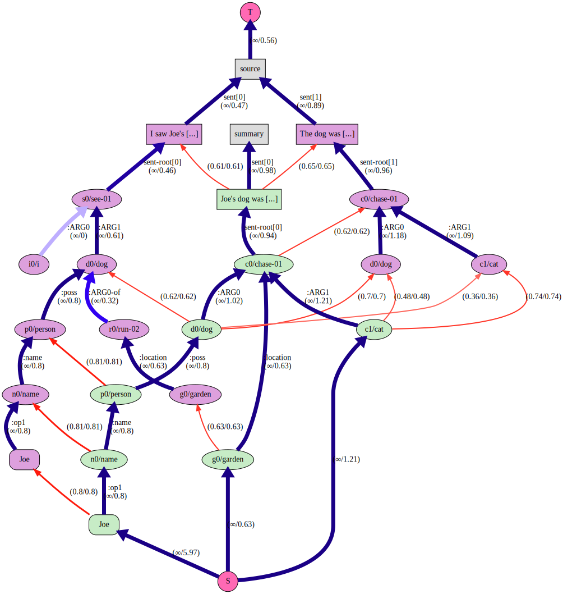

CALAMR: Component ALignment for Abstract Meaning Representation¶


This repository contains code for the paper CALAMR: Component ALignment for Abstract Meaning Representation and aligns the components of a bipartite source and summary AMR graph. To reproduce the results of the paper, see the paper repository.
The results are useful as a semantic graph similarity score (like SMATCH) or to find the summarized portion (as AMR nodes, edges and subgraphs) of a document or the portion of the source that represents the summary. If you use this library or the PropBank API/curated database, please cite our paper.
Features:
Align source/summary AMR graphs.
Scores for extent to which AMRs are summarized or represented in their source text.
Rendering of the alignments.
Support for four AMR corpora.
High-level, how-to and API documentation and quick start examples.
Table of Contents¶
Documentation¶
The recommended reading order for this project:
See the Ad hoc Corpora as a quick start.
The abstract and introduction of the paper CALAMR: Component ALignment for Abstract Meaning Representation
Installing¶
Because the this library has many dependencies and many moving parts, it is best to create a new environment using conda:
wget https://github.com/plandes/calamr/raw/refs/heads/master/environment.yml
conda env create -f environment.yml
conda activate calamr
The library can also be installed with pip from the pypi repository:
pip3 install zensols.calamr
Corpora¶
This repository contains code to support the following corpora with source/summary AMR for alignment:
LDC2020T02 (AMR Release 3.0) Proxy Corpus
ISI Little Prince
ISI Bio AMR
A micro corpus (toy corpus) used in the paper examples and usage.
Usage¶
The command-line tool and API does not depend on the repository. However, it has a template configuration file that both the CLI and the API use. The examples also use data in the repository. Do the following to get started:
Clone this repository and change the working directory to it:
git clone https://github.com/plandes/calamr && cd calamr
Copy the resource file:
cp config/dot-calamrrc ~/.calamrrc
Command Line¶
The steps below show how to use the command-line tool. First set up the application environment:
Edit the
~/.calamrrcfile to choose the corpus and visualization. Keep thecalamr_corpusset toadhocfor these examples. (Note that you can also set the theCALAMRRCenvironment variable to a file in a different location if you prefer.)Create the micro corpus:
calamr mkadhoc --corpusfile corpus/micro/source.json
Print the document keys of the corpus:
calamr keys
Ad hoc Corpora¶
The micro corpus can be edited and rebuilt to add your own data to be aligned. However, there’s an easier way to align ad hoc documents.
Align a summarized document not included in any corpus. First create the annotated documents as files
short-story.json.[ { "id": "intro", "body": "The Dow Jones Industrial Average and other major indexes pared losses.", "summary": "Dow Jones and other major indexes reduced losses." }, { "id": "dow-stats", "body": "The Dow ended 0.5% lower on Friday while the S&P 500 fell 0.7%. Among the S&P sectors, energy and utilities gained while technology and communication services lagged.", "summary": "Dow sank 0.5%, S&P 500 lost 0.7% and energy, utilities up, tech, comms came down." } ]
Now align the documents using the
XFM Bart BaseAMR parser, rendering with the maximum number of steps (-r 10), and save results toexample:calamr align short-story.json --override amr_default.parse_model=xfm_bart_base -r 10 -o example -f txt
The -r option controls how many intermediate graphs generated to show the
iteration of the algorithm over all the steps (see the paper for details). It
is possible to align ad hoc documents
programmatically as well.
Aligning Corpus Documents¶
AMR corpora that distinguish between source and summary documents are needed so the API knows what data to align. The following examples utilize preexisting corpora (including the last section’s micro corpus):
Generate the Liu et al. graph for the micro corpus in directory
example:calamr aligncorp liu-example -f txt -o example
Force the Little Prince AMR corpus download and confirm success with the single document key
1943:calamr keys --override=calamr_corpus.name=little-prince
Use the default AMR parser to extract sentence text from the Little Prince AMR corpus using the SPRING (Bevilacqua et al. 2021) parser:
calamr penman -o lp.txt --limit 5 \ --override amr_default.parse_model=spring \ ~/.cache/calamr/corpus/amr-rel/amr-bank-struct-v3.0.txt
Score the parsed sentences using CALAMR, SMATCH and WLK:
calamr score --parsed lp.txt \ --methods calamr,smatch,wlk \ ~/.cache/calamr/corpus/amr-rel/amr-bank-struct-v3.0.txt
Multiple Ad hoc Corpora¶
Multiple ad hoc corpora can coexist in one project. See the multiple corpora example. This examples demonstrates:
Creating corpora from JSON files with source/summary pairs.
Aligning the corpora.
Programmatically accessing the corpus and caching flow results.
AMR Release 3.0 Corpus (LDC2020T02)¶
If you are using the AMR 3.0 corpus, there is a preprocessing step that needs executing before it can be used.
The Proxy Report corpus from the AMR 3.0 does not have both the alignments
(text-to-graph alignments) and snt-type (indicates if a sentence is part of
the source or the summary) metadata. By default, this API expects both. To
merge them into one dataset do the following:
Obtain or purchase the corpus.
Move the file where the software can find it:
mkdir ~/.cache/calamr/download cp /path/to/amr_annotation_3.0_LDC2020T02.tgz ~/.cache/calamr/download
Merge the alignments and sentence descriptors:
./src/bin/merge-proxy-anons.py
Confirm the merge was successful by printing the document keys and align a report:
calamr keys --override=calamr_corpus.name=proxy-report calamr aligncorp 20041010_0024 -f txt -o example \ --override calamr_corpus.name=proxy-report
API¶
This section explains how to use the library’s API directly in Python.
Aligning Ad hoc Documents¶
You can parse an align documents without setting up a corpus first. To do this, there is an ad API that creates the same data files as when using with a corpus, but in a different file system space. It optionally takes the name of the corpus for this name space. If not provided one is created by hashing the data given to the API.
An example of how to parse and align ad hoc documents follows
from typing import List, Dict
from zensols.amr import AmrFeatureDocument
from zensols.calamr import (
DocumentGraph, FlowGraphResult, Resources, ApplicationFactory
)
# import and get the Resources bundle
resources: Resources = ApplicationFactory.get_resources()
# create corpus data (toy two-document corpus for this example)
corpus: List[Dict[str, str]] = [{
"id": "first",
"body": "The rulings bolster criticisms of how hastily the prosecutions were brought. The rulings were rushed.",
"summary": "The rulings suggest the prosecutions were rushed."
}]
# parse and access an ad hoc corpus as defined above with the list
# of dictionaries above
with resources.adhoc(corpus) as r:
# list the keys in the corpus, each of which is available as a document or
# alignment as flow metrics/data
keys = tuple(r.documents.keys())
print(keys)
# get a document, which parses the document (if they aren't already); this
# step isn't necessary if you want to go right to the alignments
doc: AmrFeatureDocument = r.documents['first']
doc.write()
# get and visualize the results (for documentation purposes, a new ``with`` is given)
with resources.adhoc(corpus) as r:
# get an alignment, which parses alignments (if not already)
flow: FlowGraphResult = r.alignments['first']
# write the metrics (or flow.stats to get a simle dictionary)
flow.write()
# render the results of a flow in a browser window
flow.render()
# delete flow graph terminals and prunes 0-flow alignment edges, then render it,
# add the graph as a flow child, then render all graphs in directory `example`
reduced_graph: FlowGraphResult = flow.reduce()
flow.doc_graph.children['reduced'] = graph
flow.render(
contexts=flow.get_render_contexts(
child_names=flow.doc_graph.children.keys(),
include_nascent=True),
directory=Path('example'),
display=False)
output:
summary:
The rulings suggest the prosecutions were rushed.
sections:
no section sentences
The rulings bolster criticisms of how hastily the prosecutions were brought.
The rulings were rushed.
statistics:
agg:
aligned_portion_hmean: 0.7777777777777779
mean_flow: 0.7187621593475342
tot_alignable: 16
tot_aligned: 12
aligned_portion: 0.75
reentrancies: 0
...
To display all steps of the alignment process, use the following:
with resources.adhoc(corpus) as r:
# render graphically with render level 5 (higher the more steps are rendered)
r.align('first', render_level=5)
# do not render graphically, instead write as files
r.align('first', render_level=0, directory=Path('~/Desktop/amr-graphs'))
Aligning Corpora Documents¶
You can access existing corpora (the “micro” corpus, The Little Prince,
Biomedical Corpus, or Proxy report 3.0) as discussed in Aligning Corpus
Documents. The following API can be used, which
is similar to the Aligning Ad hoc Documents
example but use a corpus. All the same resources are available in the with resource.corpus scope:
# import and get the resource bundle
from zensols.amr import AmrFeatureDocument
from zensols.calamr import FlowGraphResult, Resources, ApplicationFactory
# get the resource bundle
resources: Resources = ApplicationFactory.get_resources()
# get the Liu et al. AMR feature document example and print it,
# this accesses the corpus in the `./download` directory
with resources.corpus() as r:
# get a document, which parses the document (if they aren't already); this
# step isn't necessary if you want to go right to the alignments
doc: AmrFeatureDocument = r.documents['liu-example']
doc.write()
output:
[T]: Joe's dog was chasing a cat in the garden. I saw Joe's dog, which was running in the garden. The dog was chasing a cat.
sentences:
[N]: Joe's dog was chasing a cat in the garden.
(c0 / chase-01~e.4
:location (g0 / garden~e.9)
:ARG0 (d0 / dog~e.2
:poss (p0 / person
:name (n0 / name
:op1 "Joe"~e.0)))
:ARG1 (c1 / cat~e.6))
.
.
.
amr:
summary:
Joe's dog was chasing a cat in the garden.
sections:
no section sentences
I saw Joe's dog, which was running in the garden.
The dog was chasing a cat.
See configuration regarding text alignments.
Docker¶
A stand-alone docker image is also available (see CALAMR Docker image). This docker image provides stand-alone container with all models, configuration and the ad hoc micro corpus installed.
Configuration¶
To modify the configuration, create an ini file in ~/.calamrrc.
Text Alignments¶
The program was built to deal with data using the corpora API. However, ad hoc
documents can be aligned but they document graphs will not have the text
alignments. To enable that, in your ~/.calamrrc add the following:’
# include alignments in ad hoc parsed documents
[amr_anon_doc_factory]
remove_alignments = False
Multiprocessing¶
By default, corpus documents are lazy-aligned from the
Resources.get_corpus_document method.
However, the entire corpus can be aligned across multiple processes. In this
case, the first access to the first document will start the processing, and
will not return until the entire dataset is aligned. This is enabled by
setting the following configuration:
# use 4 processes to align the corpus
[calamr_default]
flow_graph_result_caching = preemptive
preemptive_workers = 4
Example Graphs¶
The Liu et al. example graphs were created from the last step of the API examples, which is equivalent the first step of the command line example.
GraphViz¶
To create these graphs, set your ~/.calamrrc configuration to:
[calamr_default]
renderer = graphviz
The Nascent Graph (with flow data)¶

The Source Graph¶

Plotly¶
To create these graphs, set your ~/.calamrrc configuration to:
[calamr_default]
renderer = plotly
See the interactive version.

Attribution¶
This project, or reference model code, uses:
Python 3.11
amrlib for AMR parsing.
amr_coref for AMR co-reference
zensols.amr for AMR features and summarization data structures.
Sentence-BERT embeddings
zensols.propbankdb and zensols.deepnlp for PropBank embeddings
zensols.nlparse for natural language features and NLP scoring
Smatch (Cai and Knight. 2013) and WLK (Opitz et. al. 2021) for scoring.
Citation¶
If you use this project in your research please use the following BibTeX entry:
@inproceedings{landes-di-eugenio-2024-calamr-component,
title = "{CALAMR}: Component {AL}ignment for {A}bstract {M}eaning {R}epresentation",
author = "Landes, Paul and
Di Eugenio, Barbara",
editor = "Calzolari, Nicoletta and
Kan, Min-Yen and
Hoste, Veronique and
Lenci, Alessandro and
Sakti, Sakriani and
Xue, Nianwen",
booktitle = "Proceedings of the 2024 Joint International Conference on Computational Linguistics, Language Resources and Evaluation (LREC-COLING 2024)",
month = may,
year = "2024",
address = "Torino, Italy",
publisher = "ELRA and ICCL",
url = "https://aclanthology.org/2024.lrec-main.236",
pages = "2622--2637"
}
Known Issues and Limitations¶
Processing AMRs as a corpus is currently not supported under multiprocessing
(calamr_default:preemptive_workers > 1).
Changelog¶
An extensive changelog is available here.
License¶
Copyright (c) 2023 - 2025 Paul Landes